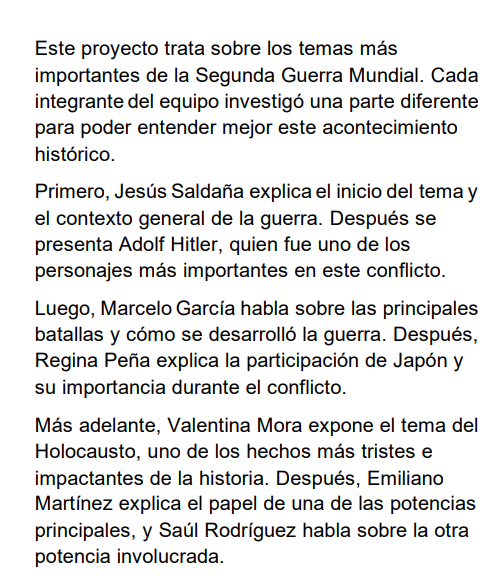

💡 Tecnológicas
Proyectos de programación, robótica y desarrollo web.
Evidencia Tecnológica
Agregar proyecto de Tecnológicas aquí.
🧪 Química
Observa los experimentos y análisis químicos.
Evidencia de Química
Agregar proyecto de Química aquí.
📊 Matemáticas
Ejercicios y análisis matemáticos para desarrollar el pensamiento lógico.
Evidencia de Matemáticas
Agregar proyecto de Matemáticas aquí.
📜 Historia
Explora la Prehistoria y las primeras civilizaciones.
Evidencia de Historia
Edad de Piedra
Uso de herramientas de piedra, caza y recolección
Edad de los Metales
Descubrimiento y uso del cobre, bronce y hierro
Mesopotamia
Ríos Tigris y Éufrates
Escritura cuneiforme y agricultura avanzada
Egipto
Río Nilo
Pirámides y sistema de irrigación
India/Harappa
Río Indo
Urbanismo planificado y alcantarillado
China
Río Huang He
Agricultura del mijo y primeros gobiernos centralizados
